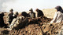

پذيرش > اخبار > سهم زنان از هشت سال جنگ ایران و عراق


 سهم زنان از هشت سال جنگ ایران و عراق سهم زنان از هشت سال جنگ ایران و عراق
4 آبان 1392 - - نسخه قابل چاپ
بی بی سی: جنگ هشت ساله ایران و عراق تاثیرات بسیاری بر زندگی افراد داشت، زنان نیز در این میان همانند دیگر جنگها از این آسیبها و مشکلات در امان نبودند.
براساس آمار بنیاد شهید در خلال سالهای ۱۳۵۹ تا ۱۳۶۷ بیش از شش هزار زن در این جنگ جان خود را از دست دادند. ۱۸۰ زن معلول جنگی و ۱۷۱ نفر هم اسیر شدند، تعداد زیادی از آنهایی هم که ازدواج کرده بودند همسرشان را از دست دادند. آمارها نشان میدهد بیش از ۵۰ هزار نفر از جان باختگان جنگ متاهل بودند و این یعنی همین تعداد زن همسر در جنگ از دست دادند و بیش از ۱۰۰ هزار مادر و خواهر نیز فرزند و برادر در جنگ از دست دادند. این در حالیکه است که بش از ۱۱ هزار نفر نیز مفقودالاثر هستند.
شاید بتوان گفت اولین گروه زنان جنگ بر زندگی آنها تاثیر گذاشت، زنان ساکن شهرهای مرزی و جنوبی بودند، مناطقی که در بدو جنگ هدف حمله عراق قرار گرفتند و آنها مجبور شدند با ترک خانه و کاشانه به عنوان خانوادههای جنگ زده، به مناطق دیگری نقل مکان کنند.
بسیاری از آنان در نخستین سالهای جنگ چندین بار منازلشان هدف موشک قرار گرفت، خانهها را مجددا ساختند اما باز هم تخریب شد و جنگ امکان ادامه زندگی به این شکل را برایشان دشوار کرد.
برخی از این زنان که مجبور به رفتن به شهرهای دیگر برای ادامه زندگی شدند، خاطرات خوبی از این کوچ اجباری ندارند.
"به ما میگفتند کولیها آمدند، ما تو شهر خودمون قبل از جنگ خانه داشتیم، حیاطی که هر روز به آن می رسیدم، اما زمان جنگ در یک اتاق زندگی میکردیم، با بچهها و مادر همسرم. از ترس موشک و حمله عراقی ها هیچی همراهمون نداشتیم، لباسهایمان به خاطر مرتب پوشیده شدن ،کهنه بود، آدمها به خودشان اجازه میدادند ما را مسخره کنند، خوشحالم آن دوران تمام شد، اما خب گریههای شبانه در راهروی محل زندگی جنگ زدهها هیچ وقت از یادم نمیره."
این سخنان منیره، یکی از زنانی است که در دوران جنگ مدتی را در محل اسکان جنگ زدگان گذرانده است.
بخشی از زنان جنگ زده نیز همانند همسران افرادی که در میادین جنگ بودند، سرپرست خانوار محسوب میشدند و باید مسئولیتهای بیشتری را بر دوش میکشیدند، تجربه مشترک دیگر این زنان دلتنگی بود، دلتنگی از دست دادن خانه و کاشانه و بستگانشان.
زنانی که همسران یا بستگان نزدیک خود را در جنگ از دست دادهاند، گروه دیگری از زنان متاثر از جنگ هستند. مادران، خواهران و همسران و دخترانی که مردان خانواده آنها به خواست قلبی یا به اجبار مجبور به حضور در میادین جنگی شدند و جان خود را از دست دادند، یا جانباز و یا مفقود الاثر شدند.
بسیاری از این زنان علاقهای به گفت و گو و یادآوری آنچه بر آنها گذشته ندارند.
همسر یکی از این آنها میگوید که پس از کشته شدن همسرش در جنگ، از سوی خانواده دو طرف طرد شد: "خانوادههای ما با این ازدواج مخالف بودند، خانواده من معتقد بود آنها به شدت مذهبی هستند، خانواده همسرم ما را بی دین میدانست، یک سال از ازدواجمان نگذشته بود که همسرم رفت جبهه، یک سال و نیم بعد، آقایی در خانه را زد و خبر را داد. برای شناسایی مراجعه کردم، بعد از آن من ماندم و تنهایی، او رفت و من تنها شدم، اما نباید خودم را میباختم، تلاش کردم و به دانشگاه رفتم، نه با سهمیه شهدا، با سهمیه تلاش و کار کردن روزانه و درس خواندن شبانه."
از طرفی استفاده تبلیغاتی از این زنان و امکاناتی که گفته میشد در اختیار آنها قرار دارد، و از طرفی نگاه منفی بیرونی برخی از مردم به این دلیل که معتقد بودند، مردان خانواده آنها مسبب ادامه جنگ هستند، فشار بر این زنان را بیشتر میکرد.
یکی از این مادران از پسر ۱۹ ساله اش که به تازگی در دانشگاه پذیرفته شده بود، میگوید: "به خاطر جنگ و اینکه مشمول بود، بردنش، پسرم چشماش آبی بود، مثل دریا، باهوش بود، به همه بچههای روستا درس میداد، رفت و وقتی برای شناسایی به من زنگ زدند، تنها از روی انگشتری که برایش فرستاده بودم، قابل شناسایی بود، هنوز اون تصویر پسرم که به خاطر شیمیایی شدن قابل شناسایی نبود، در ذهنم هست، پسرم را بردند، اما جز انگشترش هیچ چیزی برایم نگذاشتند."
همسر یکی از جانباختگان جنگ اما به نگاههای مردم منتقد است: "هر جا میرفتیم، به ما میگفتند یخچال، تلویزیون مجانی دارید دیگه! این نوع تکههایی که مردم به ما میانداختند، آزار دهنده بود. من نمیگویم برخی از خانوادهها چیزی دریافت نکردند، اما این تعداد محدود بودند، بسیای از خانوادههای شبیه ما از چنین امکانات محدودی استفاده نکردند، میگفتند ’سهمیه فرزند شهید دارند، گفتند ما جان میکنیم ،خانواده شهدا استفاده میکنند’، تا سالها این نوع نگاهها ادامه داشت. اما از زمان انتخابات سال ۱۳۸۸ و اعتراضات مردمی این نگاه تغییر کرده است."
حث تغییر "خویشتن زنانه"، مسئله دیگری است که مورد توجه کارشناسان در حوزه زنان قرار گرفته است. براساس تحقیقی که در سال ۱۳۸۶ در مورد وضعیت زنان در زمان جنگ با عنوان "تجربه زنانه از جنگ" منتشر شده است، "خویشتن زنانه" زنان سرباز ،پرستار، و سرپرستان خانوار در طول جنگ به دلیل فشارها در مناطق جنگی یا دوری از خانواده و مسئولیتهای مختلف، دستخوش تغییراتی شده است.
براساس این تحقیق، دوران کودکی بسیاری از دختربچهها و دختران نوجوان به یک باره پایان پذیرفته و وارد دوره بزرگسالی زودتر از موعد شدند. بسیاری از آنها در مناطق جنگی یا امدادرسانی کرده و یا اسلحه به دست گرفتند، گروه دیگری در پشت صحنه به جمع آوری آذوقه و بسته بندی غذا برای جبهه و یا مراقبت از اعضای مسن تر خانواده و یا مردان خانواده مشغول شدند، مردانی که بعضا هنوز هم به دلیل جراحات جنگی نیازمند مراقبت هستند.
مادر یکی از جانبازان جنگ نزدیک به بیست سال از پسرش که به دلیل موج انفجار، زندگی نباتی داشت، نگهداری کرد و تا زمان مرگ فرزندش، مراقب او بود.
علاوه بر همه اینها، برخی از این زنان به خاطر نوع نگاه جامعه به آنان مجبور به سانسور خود میشوند.
مسئله تجاوز به زنان در جنگ موضوع مهمی است که چندان به آن پرداخته نشده است. گزارشهای غیر رسمی حکایت از آن دارد که تعدادی از زنان ساکن خرمشهر و سوسنگرد مورد تجاوز عراقیان قرار گرفتند، اما تاکنون هیچ مرجع رسمی حاضر به صحبت در این مورد نشده است.
برخلاف تصور عموم، جنگ موضوعی تنها مردانه نیست، بلکه زنان و کودکان، نخستین آسیبدیدگان جنگ هستند و سایه آن تا سالها بر زندگی آنان باقی میماند.
ارسال به
بالاترین
،
توییتر
،
فریندفید
،
فیسبوک
در همين بخش :
 پروین ذبیحی برنده جایزه حقوق بشری سازمان غيردولتى اتريشى سودويند شد پروین ذبیحی برنده جایزه حقوق بشری سازمان غيردولتى اتريشى سودويند شد
پخش کارت پستال و بروشور در روز جهانی زن در تهران
تمدید زمان برای امضای بیانیهی جمعی از فعالان زن به مناسبت هشت مارس
مجوزی که در نطفه خفه شد
بیش از 2000 امضا در اعتراض به تبعیض های آموزشی به مجلس تحویل داده شد
ديگر بخش ها :
طرح یک میلیون امضا
|
مقالات
|
سایت نوشته ها
|
اخبار
|
گزارش كمپين
|
گفت و گو
|
علیه سکوت
|
كوچه به كوچه
|
نامه های شما
|
گزارش ویژه
|
گفتگو با اعضا
|
ویژه سالگرد کمپین
|
تصویر برابری
|
دل آرام علی
|
تریبون
|
مقالات
|
تاریخ شفاهی
|
خارج از چارچوب
|
کتابخانه
|
درباره کمپین
|
کمپین در شهرها
|
کمپین در بند
|
صدای تغییر
|
ویژه 22 خرداد
|
لایحه حمایت از خانواده
|
گالری
|
عشا مومنی
|
امیر یعقوبعلی
|
خدیجه مقدم
|
راحله عسگری زاده و نسیم خسروی
|
پروین اردلان،جلوه جواهری، مریم حسین خواه، ناهید کشاورز
|
زینب پیغمبرزاده
|
سعیده امین، سارا ایمانیان، محبوبه حسین زاده، ناهید کشاورز و همایون نامی
|
احترام شادفر
|
نسیم سرابندی زاده،فاطمه دهدشتی
|
وبلاگ مهمان
|
پرونده خرم آباد
|
دستگیری ها
|
مریم مالک
|
پرستو اللهیاری
|
مهرنوش اعتمادی
|
سمیه رشیدی
|
Other Languages
|
همراهان
|
«فراخوان کمپین ده روز با بهاره هدایت»
| English
|